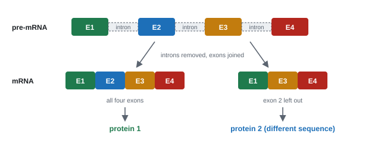
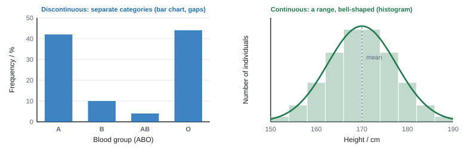

Development of organisms
A complex organism starts as a single cell and grows by dividing and specialising. This page looks at stem cells and the embryo, how cells specialise by differential gene expression, how one gene can make several proteins, how the environment and epigenetic changes affect the phenotype, and how multiple alleles and many genes shape variation.
Spec3.17Stem cells, potency, the morula and the blastocyst
(i) Understand the terms stem cell, totipotent, pluripotent, morula and blastocyst. (ii) Discuss how society uses scientific knowledge to make decisions about using stem cells in medical therapies.
Key terms
- Stem cell: an unspecialised cell that can divide by mitosis to make more stem cells, and can differentiate into specialised cell types.
- Totipotent: can differentiate into any cell type, including the extra-embryonic cells of the placenta and membranes. Only the zygote and the cells of the first few divisions (up to the morula).
- Pluripotent: can differentiate into almost any cell type in the body, but not the placenta. The inner cell mass of the blastocyst.
- Multipotent (adult stem cells, e.g. bone marrow): only a limited range of related cells, e.g. the different blood cells.
Early development (human)
| Stage | Roughly when | What it is | Potency |
|---|---|---|---|
| Zygote | day 0 | one diploid cell after fertilisation | totipotent |
| Morula | day 3–4 | a solid ball of about 16 cells, all made by mitosis from the zygote | totipotent |
| Blastocyst | day 5 | a hollow ball of about 100 cells: an outer layer (trophoblast, which forms the placenta), a fluid-filled cavity, and an inner cell mass (which forms the embryo) | inner cell mass pluripotent |
As cells divide, some genes are switched off permanently (3.18), so potency is lost step by step.
Stem cells in medicine
- Bone marrow transplants: donor stem cells replace a patient's blood cells after leukaemia treatment.
- Research and trials: replacing heart muscle after a heart attack, nerve cells in Parkinson's disease or spinal injury, β cells in type 1 diabetes, retinal cells in macular degeneration.
| Source | For | Against |
|---|---|---|
| Embryonic (inner cell mass of spare IVF embryos) | pluripotent: can make almost any cell type; grow readily | the embryo is destroyed; some believe life begins at fertilisation; donor cells may be rejected |
| Adult (bone marrow, etc.) | no embryo destroyed; can be the patient's own, so no rejection; simple to collect | multipotent: limited range of cells; few in number |
| Induced pluripotent (iPS) (adult cells, e.g. skin, reprogrammed by switching on certain genes) | pluripotent; no embryo; patient's own cells, so no rejection | reprogramming may not be complete; risk of tumours; still being developed |
How society decides
- Scientists publish results; other scientists check them by peer review.
- Ethics committees and the public (through consultation and debate) weigh benefits against moral objections.
- Governments pass laws, and regulatory authorities license, guide and monitor research and treatments (e.g. in the UK, embryos may be used for research only up to 14 days under licence).
- Decisions differ between countries, cultures and religions, so some therapies are allowed in one country and banned in another.
"Discuss" means both sides and a conclusion: the medical benefit, the ethical objection (embryo destruction), alternatives (adult or iPS cells), and who decides (regulators, law). Use the details in the question, e.g. "the disease is fatal", "the cells are put into the liver, so gametes aren't affected".
- Morula: "solid ball" of totipotent cells. Blastocyst: "hollow ball", outer layer (trophoblast), inner cell mass of pluripotent cells, fluid-filled cavity. Both divide by mitosis; both diploid.
- Compare morula and blastocyst: full marks need a similarity (both diploid, both made by mitosis) plus differences (totipotent v pluripotent; solid v hollow; the blastocyst has more cells).
- Totipotent: all cell types including extra-embryonic / placenta cells. Pluripotent: "most cell types" (not "any"), not placenta.
- Totipotent → pluripotent: "differential gene expression"; "some genes switched off"; "by epigenetic modification"; "proteins made from the active genes permanently modify the cell". "Genes activated" alone is ignored.
- Heart attack: "pluripotent stem cells differentiate into heart muscle cells" "to replace the dead cells". "Repair" is ignored.
- Society: "stem cells can differentiate into different cells/tissues", "great potential for therapies"; against: "destruction of an embryo" is an ethical issue; early embryos "have no nervous system / can't feel pain"; iPS: "no embryo used".
Often asked as: name or circle the morula or blastocyst; describe the blastocyst; compare a morula and a blastocyst; explain the change from totipotent to pluripotent; ethics of a stem-cell therapy (often in an animal or new-drug context).
Not being able to name the morula (three quarters failed in Oct 2019). "Blastocyte" isn't credited.
Swapping totipotent and pluripotent; saying the blastocyst is totipotent.
Describing the differences between totipotent and pluripotent when the question asks how a cell changes (half the candidates scored 0, Jun 2019).
Saying dead heart cells are "repaired". They are replaced.
Examined in past papers even though the spec doesn't list it.
- Trophoblast, inner cell mass and the blastocoel (cavity) by name (WBI12 Jun 2023, Jan 2026).
- Induced pluripotent stem cells (hiPSC), made by switching on genes such as sox2 (WBI12 Jan 2023, Jun 2025).
- Plant meristem cells are totipotent: a small piece of tissue grown on agar with nutrients and hormones forms a whole new plant, genetically identical to the parent (tissue culture, WBI12 Oct 2025).
Spec3.18Cell specialisation by differential gene expression
Understand how cells become specialised because different genes are expressed: active genes make mRNA, the mRNA is translated into proteins, and the proteins control cell processes or decide cell structure, in animals and plants.
Same genes, different genes switched on
- Every body cell in an organism contains the same genes (the same DNA), because all came from the zygote by mitosis.
- What differs is which genes are active. Some genes (for respiration enzymes, membrane proteins) are on in every cell; others are on only in certain cells.
The chain
- A signal (e.g. a chemical from nearby cells, a hormone) reaches the cell.
- Some genes are switched on and others switched off (by transcription factors binding to DNA, and by epigenetic changes, 3.20).
- Only the active genes are transcribed, producing active mRNA.
- The mRNA leaves the nucleus and is translated on ribosomes into proteins.
- These proteins (enzymes, structural proteins, receptors) change the cell's structure and function, so the cell becomes specialised. Changes build up over time and are usually permanent.
Transcription factors
- Proteins that bind to specific DNA sequences, usually the promoter next to a gene.
- Activators help RNA polymerase bind, so the gene is transcribed. Repressors stop RNA polymerase binding, so it isn't.
Animal example: a β cell in the pancreas
The insulin gene is switched on in β cells (and off in every other cell type).
Insulin gene transcribed → insulin mRNA → translated on the rER → insulin made, packaged by the Golgi and secreted (3.4).
The cell also has lots of rER, Golgi and secretory vesicles. A skin cell has the insulin gene too, but it is switched off.
Plant example: a meristem cell becoming sclerenchyma or xylem
Genes for the enzymes that make cellulose and lignin are switched on.
mRNA transcribed → enzymes made → extra cellulose laid down and the walls lignified (secondary thickening).
The cell contents die, leaving a strong, hollow, dead fibre or vessel (Topic 4).
A stem cell contains the full set of genes, like every other cell in the body. Genes that every cell needs, such as those for respiration enzymes, are active, along with the genes that keep it unspecialised.
A signal, such as a chemical from neighbouring cells, causes some genes to be switched on and others to be switched off. Proteins called transcription factors bind to the DNA next to the genes that are switched on.
This is differential gene expression: different cells use different parts of the same set of genes.
The genes that are switched on are transcribed, producing active mRNA, which leaves the nucleus through the nuclear pores.
The mRNA is translated on ribosomes, so the cell makes only the proteins coded for by its active genes.
These proteins control the cell's processes or build its structure. A muscle cell fills with contractile proteins, and a nerve cell grows long extensions and the machinery to send electrical signals.
The genes that are switched off are still present but are not transcribed, so their proteins are not made. As the cell becomes more specialised, it loses the ability to become other cell types.
This is why a liver cell cannot normally become a nerve cell, even though it still carries the genes for one.
- The chain: "differential gene expression"; "gene X switched on in these cells and off in others due to epigenetic modification / DNA methylation / histone modification"; "transcription of active genes / active mRNA produced"; "translation, producing proteins"; "proteins determine / change the cell's structure or function", with a specific change for the cell named.
- Name the gene and protein in context: insulin, arginase, muscle proteins, sclerenchyma (cellulose, lignin, thickened walls).
- Gene activity graphs: "gene T decreases and gene U increases"; "gene T switched off because its product isn't needed". Don't say "switched on" if the gene was already active.
- A mutation that switches a silent gene back on: the gene "is not switched off"; transcription and translation follow; a structural change results (e.g. teeth in a chick).
Often asked as: explain how a named cell becomes specialised (sperm, muscle, sclerenchyma, a liver cell); interpret gene-activity graphs; explain how a mutation reactivates a silent gene.
"Specialised cells contain different genes." They contain the same genes; different genes are expressed.
Saying genes are "switched on/off" without saying how.
Mixing up transcription and translation, or not saying where translation happens.
Stopping at "proteins are made" without linking them to the structure or function of the cell named. Writing about totipotent and pluripotent cells in a plant question.
Examined in past papers even though the spec doesn't list it.
- Damage switches on a gene in regenerating tissue: chemical changes to DNA or histones loosen the DNA, so RNA polymerase / transcription factors can bind the promoter (WBI12 Jun 2025).
- Plant tissue culture: totipotent cells, mitosis, genetically identical cells, then differential gene expression to form roots and leaves (WBI12 Oct 2025).
Spec3.19One gene, more than one protein
Understand how one gene can code for more than one protein because of changes made to mRNA after transcription.
Introns, exons and splicing
- In eukaryotes, a gene contains exons (base sequences that code for amino acids) separated by introns (non-coding sequences).
- Transcription copies the whole gene, introns included, making pre-mRNA in the nucleus.
- Before it leaves the nucleus, the pre-mRNA is spliced: all introns are removed and the exons are joined together, making mature (active) mRNA. Splicing is done by enzyme complexes called spliceosomes.
- Prokaryotic genes have no introns, so their mRNA isn't spliced.
Alternative splicing
- The exons of one pre-mRNA can be joined in different combinations: some exons are left out, or the order changes.
- Each combination gives a different mRNA → a different sequence of amino acids (primary structure) → a different folding and shape → a different protein.
- So one gene can make several proteins, and humans make far more kinds of protein than they have genes.

| Pre-mRNA | Mature (active) mRNA | |
|---|---|---|
| Similarities | both single-stranded RNA, with bases A, U, C, G, ribose and phosphate; each exon has the same base sequence in both | |
| Contains | introns and exons | exons only |
| Length | longer | shorter |
| Where | in the nucleus only | leaves through nuclear pores to the ribosomes |
| Exons | all of them, in the gene's order | may be fewer or in a different order |
If the question gives a diagram with exons labelled (e.g. P, Q, R, S), quote two different exon combinations from it, e.g. "PQS and PRS". Most candidates don't, and lose the mark.
- "Post-transcriptional changes / (pre-)mRNA splicing" (alternative splicing accepted).
- "All introns removed (by enzymes / spliceosomes)". "Some introns" is rejected.
- "Removal of some exons / rearrangement of exons / different permutations of exons", with two different orders from the diagram.
- "Different amino acid sequence / primary structure / polypeptide", so different folding and shape. "Different proteins produced" alone is ignored.
- Pre-mRNA v mRNA: similarities (single-stranded; A, U, C, G; ribose, phosphate) and differences (introns + exons v exons only; fewer or reordered exons; mRNA shorter).
Often asked as: explain how one gene gives two proteins (3–5 marks, often with an exon diagram from an unfamiliar organism); compare pre-mRNA and active mRNA.
Giving an answer about mutation, differentiation or epigenetics: none of these is post-transcriptional, and they earn nothing here.
Swapping introns and exons. Describing transcription and translation when only the change to the mRNA is asked.
Saying only that exons are rearranged: examiners want removal of exons as well.
Examined in past papers even though the spec doesn't list it.
- The words intron, exon, spliceosome and alternative splicing are all used in mark schemes (WBI12 Oct 2020, Jun 2023).
- In fruit flies one gene, Dsx, is spliced into two different proteins, one leading to female development and one to male (WBI12 Jun 2024).
Spec3.20Genotype, environment and epigenetics
(i) Understand that phenotype results from the interaction of genotype and environment. (ii) Know how epigenetic modification (DNA methylation and histone modification) can switch genes on or off. (iii) Understand how epigenetic changes can be passed on when cells divide.
Phenotype = genotype + environment
- Genotype: the alleles an organism has. Phenotype: its observable characteristics.
- The genotype sets the potential; the environment affects how much of it is reached.
| Example | Genotype | Environment |
|---|---|---|
| Himalayan rabbit / Siamese cat coat | allele for a temperature-sensitive enzyme that makes dark pigment | enzyme is inactive at core body temperature but active in cooler extremities, so only ears, nose, paws and tail are dark |
| Human height | many genes (3.21) | diet, disease during childhood |
| Plant height and colour | genes for growth, chlorophyll | light (etiolation in the dark), magnesium or nitrate in the soil (chlorosis) |
| Identical twins | same genotype | grow apart in weight, disease and behaviour as their environments (and epigenetic marks) differ |
Variation caused by the environment alone is not passed on in the DNA sequence.
Epigenetics
Epigenetic modification: chemical changes to DNA or to the histone proteins it is wrapped round, which switch genes on or off without changing the base sequence. Diet, stress, smoking, toxins and age can all change epigenetic marks.
DNA in the nucleus is wound round histones. How tightly it is wound decides whether RNA polymerase and transcription factors can reach a gene.
| DNA methylation | Histone acetylation | Histone methylation / deacetylation | |
|---|---|---|---|
| What's added | methyl (–CH₃) groups to cytosine bases (at CG sites), often in a gene's promoter | acetyl groups to amino acids (lysine) in histones | methyl groups added to histones, or acetyl groups removed |
| Effect on chromatin | promoter blocked; DNA wound more tightly | histones lose positive charge, bind DNA less tightly: open chromatin (euchromatin) | DNA wound more tightly: condensed chromatin (heterochromatin) |
| Transcription factors / RNA polymerase | can't bind | can bind | can't bind |
| Gene | switched off (silenced) | switched on | switched off |
So: methylated DNA → no transcription → no mRNA → no protein.
Passing epigenetic marks on
- When DNA replicates, each new double helix has one old strand (with its methyl groups) and one new, unmethylated strand.
- A methyltransferase enzyme recognises the half-methylated sites and adds methyl groups to the matching cytosines on the new strand. Histone marks are rebuilt too.
- So after mitosis, both daughter cells have the same pattern of active and silent genes. That's how a liver cell's daughters stay liver cells.
- Most marks are erased when gametes form, but a few survive into the next generation. Children of mothers starved in the Dutch famine of 1944–45 showed altered methylation and health decades later.
- DNA methylation: "methyl / CH₃ groups added to cytosine" (CpG, "in the promoter region" accepted); "gene switched off / silenced"; "RNA polymerase / transcription factors cannot bind"; "no transcription / translation"; "the protein isn't produced".
- The enzyme: "binds a methyl group to DNA", "to cytosine". Histones, amino acids or cysteine are rejected.
- Histone modification: "methylation / acetylation (or phosphorylation) of histones". Methylation: "histones closer, DNA more tightly wrapped (heterochromatin), gene off". Acetylation: "histones further apart, DNA less tightly wrapped (euchromatin), gene on". "Loose / tight histones" is ignored.
- Passing on: "marks are copied when DNA replicates", "daughter cells have the same methylation"; if the enzyme is missing, the modification is diluted at each division until it disappears.
- Tumour suppressor gene methylated → gene silenced → no protein to stop the cell cycle → uncontrolled mitosis → tumour. A drug that lowers methylation reverses this.
- Coat colour (6-mark): multiple alleles; a temperature-sensitive enzyme; pigment only in cooler extremities. Level 3 needs genotype → enzyme → phenotype plus the environment.
Often asked as: describe one epigenetic modification; explain how methylation silences a gene (often a tumour suppressor); histone diagrams; how marks pass to daughter cells; 6-mark questions on epigenetic drugs with graphs, or on gene–environment interaction.
"Epigenetics changes the DNA sequence." It changes gene activity, not the base sequence (a mutation changes the sequence).
Methylating DNA in a histone question, or acetylating DNA. Saying methylation "switches genes on".
Saying "the gene stops cell division": the protein does.
Not linking the modification to the gene being switched off; "balanced diet" or "different exposure" with no detail.
Examined in past papers even though the spec doesn't list it.
- CpG sites, the enzyme DNMT (DNA methyltransferase), and the terms euchromatin / heterochromatin (WBI12 Jan 2025, Oct 2025).
- Other histone modifications, such as phosphorylation, are accepted alongside acetylation and methylation (WBI12 Oct 2019, Jun 2023).
- Demethylating drugs reactivate silenced tumour suppressor genes; evaluate them with error bars and the mitotic index (WBI12 Jan 2026, 6-mark).
- In enzyme-transfer experiments, a mark kept by the enzyme passes to every daughter cell; without the enzyme it is halved at each division (WBI12 Oct 2021).
Spec3.21Multiple alleles, polygenic inheritance and continuous variation
Understand how some phenotypes are affected by multiple alleles of one gene, or by many genes (polygenic inheritance), plus the environment, and how polygenic inheritance produces continuous variation.
Multiple alleles: one gene, more than two alleles
- A gene can have three or more alleles in a population, though each individual still has only two (one on each homologous chromosome).
- Each allele has a different base sequence, so codes for a slightly different mRNA and protein (or none).
- ABO blood groups: one gene, three alleles. IA and IB are codominant; IO is recessive to both.
| Genotype | Phenotype (blood group) |
|---|---|
| IAIA or IAIO | A |
| IBIB or IBIO | B |
| IAIB | AB (both antigens made) |
| IOIO | O |
- Rabbit coat colour: four alleles in a dominance series, C (full colour) > cch (chinchilla) > ch (Himalayan) > c (albino). The Himalayan pattern also depends on temperature (3.20).
- Multiple alleles give a few distinct categories: discontinuous variation.
a multiple-allele cross
Parents: IAIO (group A) × IBIO (group B).
Gametes: IA or IO; IB or IO.
Offspring: IAIB (AB), IAIO (A), IBIO (B), IOIO (O): 1 : 1 : 1 : 1. Two group A and B parents can have a child of any blood group.
Polygenic inheritance: many genes, one characteristic
- Polygenic: a characteristic controlled by many genes at different loci, each with a small, additive effect. Examples: height, skin colour, wheat seed colour, milk yield.
- The many genotypes give many small steps of phenotype. The environment then blurs the steps, giving a smooth range: continuous variation, usually a bell-shaped (normal) distribution. Most individuals are near the mean; few are at the extremes.

two genes with additive effects
Wheat seed colour: each dominant allele (A or B) adds red pigment; recessive alleles (a, b) add none.
Cross AaBb × AaBb. Each parent makes 4 gametes (AB, Ab, aB, ab), giving 16 combinations.
| Number of dominant alleles | 0 | 1 | 2 | 3 | 4 |
|---|---|---|---|---|---|
| Fraction of offspring | 1/16 | 4/16 | 6/16 | 4/16 | 1/16 |
So 1 : 4 : 6 : 4 : 1: the middle shade is most common and the extremes are rare. With three genes (AaBbCc × AaBbCc) it becomes 1 : 6 : 15 : 20 : 15 : 6 : 1 out of 64, closer still to a smooth curve.
| Discontinuous | Continuous | |
|---|---|---|
| Genes | one gene (sometimes with multiple alleles) | many genes (polygenic) |
| Environment | little or no effect | large effect |
| Values | distinct categories, no in-betweens | a range between two extremes |
| Graph | bar chart (gaps between bars) | histogram or smooth curve, bell-shaped |
| Examples | ABO blood group, sex, seed shape | height, mass, skin colour, leaf length |
- Polygenic: "many / multiple genes contribute to the same characteristic"; "genes at different loci". "Alleles" alone isn't enough, and writing "characteristics" lost the mark.
- Sketch: a bell-shaped curve starting and ending at zero; x-axis = the characteristic (e.g. height / cm), y-axis = frequency / number of individuals. "Population" or "variation" as axis labels is ignored.
- Wheat colour: "more recessive alleles = lighter colour"; "independent assortment and crossing over → gamete variation"; "random fertilisation"; "low probability of inheriting 0 or all recessive alleles", so intermediate colours are most common.
- Multiple alleles: "different alleles have different base sequences / code for different mRNA", so "a different polypeptide / protein / pigment"; heterozygotes may show both alleles or an intermediate phenotype. "Polygenic" is rejected here.
- Predictions from a rule: follow every step and keep the unit (e.g. (1.59 + 1.76 − 0.13) ÷ 2 = 1.61 m).
Often asked as: define polygenic inheritance; sketch the distribution; explain variation in wheat or skin colour (including a 6-mark); explain multiple alleles at one locus.
"Polygenic means many alleles for one gene." That is multiple alleles. Polygenic means many genes.
Using "population" or "variation" as an axis label; drawing Punnett squares when a distribution is asked.
Writing about crossing over, linkage or epigenetics when the question is about multiple alleles. Describing a table instead of explaining it.
Examined in past papers even though the spec doesn't list it.
- The probability of the extremes: in AaBbCc × AaBbCc, the chance of inheriting all six dominant alleles is (½)⁶ = 1 in 64 (WBI12 Oct 2022).
- A normal distribution of bean mass or leaf width is continuous variation (WBI12 Jan 2020).
- Two people with the same polygenic genotype can differ because of environment (UV exposure, diet) or epigenetic marks (WBI12 Jan 2022, 6-mark).
Quick checks
Which statement correctly describes a pluripotent stem cell?
Pluripotent cells can form almost all body cell types but not the placenta or other extra-embryonic tissues, which is what separates them from totipotent cells. A cell limited to one tissue is an adult stem cell, and a committed cell is no longer a stem cell.
Where are the pluripotent embryonic stem cells found in a blastocyst?
The inner cell mass gives rise to the body of the embryo and is the source of pluripotent stem cells. The outer trophoblast forms the placenta, and the fluid cavity is not made of cells.
Why are adult stem cells less ethically controversial than embryonic stem cells?
Adult stem cells are taken from tissues of a living person, so no embryo is destroyed. They are not totipotent, they can be used in other species in some research, and they usually do need culturing before use.
Differentiation in a stem cell mainly involves which change?
A specialised cell keeps the full set of genes. Differentiation changes which genes are expressed, so the cell makes only the proteins its job needs. Division rate does not define differentiation.